A personal movie discovery and film-journal website built with HTML, CSS, JavaScript, PHP and MySQL.
Information about films has never been easier to find: plot summaries, cast lists and critic scores are a search away. What is much harder to keep is a personal record of the films a person has watched — when they saw them, what they thought, how they rated them, and what they still want to see. That memory usually ends up scattered across notes apps, chat messages, screenshots and half-remembered conversations.
Film-logging services exist, but they are large commercial products whose inner workings cannot be inspected. A small, complete and readable implementation of the same idea is a much better way to learn how a data-driven web application is put together, from the HTML form a user types into, to the row that is finally stored in the database.
The Web Technologies course covers markup and styling, client-side scripting, asynchronous requests, server-side scripting, sessions and relational databases. A course project should show that these topics work together as one system. A film journal is a natural fit: it needs well-structured pages, responsive design, interactive forms with validation, a server that remembers who is logged in, and a relational schema with real relationships between users, movies and their activity.
To design and implement a multi-user web application in which a visitor can discover movies from a catalogue and, after registering, keep a personal record of ratings, reviews, a watchlist and a dated viewing diary — with every personal action validated and protected on the server, and with all four CRUD operations demonstrated against a relational database.
The system covers account management, the movie catalogue, search and genre filtering, the movie detail page, ratings, reviews, the watchlist, the diary and the profile. The catalogue is a local starter set of twelve well-known films stored in MySQL; no external movie API is used, and posters are rendered as styled placeholders. The application is a learning project intended for a local Apache + PHP + MySQL (XAMPP) installation: it has no admin panel, e-mail verification, password reset, social feed or recommendation engine.
Suggested practicals and their counterpart in the project.
| No. | Practical | Where it appears |
|---|---|---|
| 1 | Basic page: headings, lists, images | Home hero, section headings, navigation list, poster cards |
| 2 | Semantic HTML tags | header, nav, main, section, article, footer, blockquote, time |
| 3 | CSS inline, internal, external | One external style.css shared by all eight pages; inline styles set from JavaScript for poster backgrounds |
| 4 | Responsive page: Flexbox, Grid, media queries | Movie grids, hero layout, 900 px and 680 px breakpoints, collapsible mobile menu |
| 5 | CSS positioning | Absolutely positioned hero posters, sticky mobile header, fixed toast notification |
| 6 | Linking JavaScript, events, array functions | forEach, map, filter, find and Set in app.js |
| 7 | Front-end functionality and form validation | Registration (length, confirm password), login, review length (10–1000), date picker max |
| 8 | React SPA with functional components and JSX | Not used — the project deliberately uses vanilla JavaScript |
| 9 | React props, state, hooks, events, conditional rendering | Not used; equivalent conditional rendering is done for guests vs. logged-in users in app.js |
| 10 | Fetch and display API data (JSON) | api() helper; catalogue, detail, reviews, watchlist, diary, profile |
| 11 | DOM manipulation and events | createElement, replaceChildren, classList, textContent; submit, click and change handlers |
| 12 | PHP: forms, validation, strings, sessions | auth.php, db.php (cleanText, positiveInt, isValidDate) |
| 13 | PHP + MySQL connectivity and CRUD | db.php, cinephile_simple.sql, all six endpoints |
| 14 | Node.js and Express server, routing, static files | Not used — Apache serves static files and PHP handles routing by ?action= |
| 15 | REST-style API with a database | JSON endpoints under backend/ with a common {success, message, data} envelope |
| 16 | Course project | This project |
Applications that track books, music or films share a common pattern: a shared catalogue of items, and per-user activity recorded against those items. The activity takes a few typical forms:
Each of these maps naturally onto a relational table, and the difference between them is expressed through keys: a rating or watchlist row is unique per user and item, so a composite primary key enforces it; a diary or review row is an event, so it gets its own identifier. Cinephile Lite is built directly on this observation.
In a classic multi-page web application the browser requests a page, the server builds it and sends back complete HTML. Modern applications often separate the two: static pages are delivered once, and JavaScript then exchanges small JSON messages with the server through asynchronous requests (the approach popularised as Ajax). Cinephile Lite uses this hybrid model — eight static HTML pages, with all data loaded and saved through JSON endpoints — so that the page structure stays readable while user actions feel immediate.
Cinephile Lite compared with common ways of keeping track of films.
| Approach | Strengths | Weaknesses | How Cinephile Lite differs |
|---|---|---|---|
| Notes app or spreadsheet | Flexible, no account needed | No structure, no catalogue, no statistics | Structured ratings, reviews, watchlist and diary with live stats |
| Commercial film-logging sites | Huge catalogue, social features | Opaque, closed source, not a learning tool | Small, readable code that can be explained line by line |
| Streaming-service “My List” | Built into the player | Locked to one service; no dated history or notes | Independent of any service; records every viewing |
| Movie-database sites | Rich metadata and ratings | Focus on the film, not the viewer’s own history | Focus on personal memory: “Every film you watch, remembered.” |
HTML5 semantic elements (header, nav, main, section, article, footer) describe each page so that assistive technology understands it. Every form control has a label, status areas use role="status" and aria-live, and the mobile menu button exposes aria-expanded. CSS custom properties hold the design tokens (colours, radii, shadows), Flexbox and Grid handle layout, media queries adapt it to narrow screens, and prefers-reduced-motion turns transitions off for users who ask for it.
A single file, app.js, reads data-page from the body element and runs the controller for that page. All server communication goes through one api() helper built on the Fetch API with async/await. Content from the server — including review text written by other users — is inserted with textContent rather than innerHTML, so it can never be interpreted as markup.
PHP runs on the server and generates JSON responses. It validates every request a second time (browser validation is only a convenience), keeps the logged-in user in a session, and is the only layer that can talk to the database. Strict typing (declare(strict_types=1)) and small, single-purpose functions keep the code easy to follow.
MySQL (or its drop-in replacement MariaDB) stores users, movies and all activity in InnoDB tables, which support transactions and foreign keys. PHP Data Objects (PDO) provides the connection; it is configured to throw exceptions, to return associative arrays and to use real (not emulated) prepared statements, so user input is always sent separately from the SQL text.
Passwords are stored with password_hash() (bcrypt by default) and checked with password_verify(). The session cookie is HttpOnly, uses SameSite, and the session identifier is regenerated after login to prevent session fixation.
Cinephile Lite follows a three-tier client–server architecture. The browser downloads eight static HTML pages, one stylesheet and one script from Apache. After that, the script talks to the server only through JSON endpoints in the backend/ folder. Each endpoint includes db.php for shared helpers and auth.php for the session, and reaches MySQL only through PDO prepared statements. The server owns all state; the browser keeps nothing except the session cookie.
Source files and their single responsibility.
| File | Responsibility |
|---|---|
backend/db.php | PDO connection, JSON response helper, global exception handler, CSRF check, input helpers. |
backend/auth.php | Session cookie set-up, register, login, logout, session status and profile statistics. |
backend/movies.php | Catalogue list, title search, genre filter, genre list and movie detail with average rating. |
backend/ratings.php | Save or update one 1–5 star rating per user and movie; read the current rating. |
backend/reviews.php | List reviews for a movie; create a validated review. |
backend/watchlist.php | List, add and remove watchlist entries for the current user. |
backend/diary.php | List, add and remove dated viewing entries, with date and ownership checks. |
assets/js/app.js | Page-aware controller: session, navigation, rendering, forms and all fetch() calls. |
assets/css/style.css | Design tokens, layout, cards, forms, states and responsive rules. |
sql/cinephile_simple.sql | Creates the cinephile_simple database, six tables and twelve starter movies. |
tests/smoke.sh | End-to-end curl test of authentication, validation and CSRF behaviour. |
The schema contains exactly six tables. users and movies are the two parent entities; the other four tables record what a user did with a movie. Ratings and the watchlist use a composite primary key (user_id, movie_id), so a user can have only one current rating per film and cannot save the same film twice. Reviews and diary entries are events with their own id, so a user may write several notes or log a rewatch. All child rows use foreign keys with ON DELETE CASCADE, and a CHECK constraint keeps stars between 1 and 5 even if the application layer were bypassed.
cinephile_simple database.Tables, keys and the CRUD operations performed on each.
| Table | Key design | Operations used by the application |
|---|---|---|
users | PK id; unique username, email | Create (register), Read (login, profile) |
movies | PK id; indexes on title, genre, year | Read (list, search, filter, detail) |
ratings | PK (user_id, movie_id); CHECK 1–5 | Create / Update via INSERT … ON DUPLICATE KEY UPDATE; Read (average with AVG) |
reviews | PK id; FKs to users, movies | Create, Read (joined with username) |
watchlist | PK (user_id, movie_id) | Create (INSERT IGNORE), Read, Delete |
diary | PK id; index (user_id, watched_date) | Create, Read (newest first), Delete (owner only) |
Every protected write follows the same path, shown below for saving a rating. The script sends a JSON body with a custom X-Requested-With: fetch header. PHP first checks that a user is logged in, then that the request is a POST carrying that header — a cross-site form or image tag cannot add custom headers, which blocks cross-site request forgery. Input is then validated, the movie’s existence is confirmed, and only then is a prepared statement executed. Each failure returns a specific status code and a friendly message; any unexpected exception is logged and turned into a JSON 500 so the browser never receives a blank page.
POST ratings.php?action=save).Security measures and where they are implemented.
| Threat | Measure in Cinephile Lite |
|---|---|
| SQL injection | PDO prepared statements with emulation disabled in every query. |
| Cross-site scripting | User text rendered with textContent; no HTML from the server is ever injected. |
| Cross-site request forgery | requireWriteRequest(): POST only and X-Requested-With header required; logout is POST only. |
| Password disclosure | bcrypt hashes via password_hash(); passwords limited to 8–72 bytes so bcrypt never truncates silently. |
| Session fixation / theft | session.use_strict_mode, session_regenerate_id(true) on login, HttpOnly and SameSite cookie. |
| Open redirect | safeNextPage() only follows ?next= to one of the site’s own .html pages. |
| Acting on another user’s data | Every query on personal tables is filtered by the session’s user_id. |
| Leaking internals | Global exception handler logs details server-side and returns a generic JSON 500. |
The repository includes tests/smoke.sh, an end-to-end script that drives the real endpoints with curl and a cookie jar, exactly as the browser would. It was run against PHP 8.3 and MariaDB 11 with the schema imported, and all fifteen checks passed.
Results of the end-to-end smoke test.
| No. | Test case | Result |
|---|---|---|
| 1 | Guest is blocked from the watchlist | Pass |
| 2 | New user registers successfully | Pass |
| 3 | Duplicate registration is rejected (409) | Pass |
| 4 | 73-byte password is rejected | Pass |
| 5 | Wrong password is rejected | Pass |
| 6 | Correct login succeeds | Pass |
| 7 | Cross-site form post is blocked while logged in | Pass |
| 8 | GET logout is refused | Pass |
| 9 | Rating is saved | Pass |
| 10 | Rating of 6 stars is rejected | Pass |
| 11 | Future diary date is rejected | Pass |
| 12 | Diary entry is added | Pass |
| 13 | Profile statistics reflect the new entry | Pass |
| 14 | Logout succeeds | Pass |
| 15 | Profile is blocked after logout | Pass |
The screens below show the working application served by PHP with a MariaDB database: the home page, the catalogue with search and genre filter, the movie detail page as seen by a guest, and the registration and login forms.
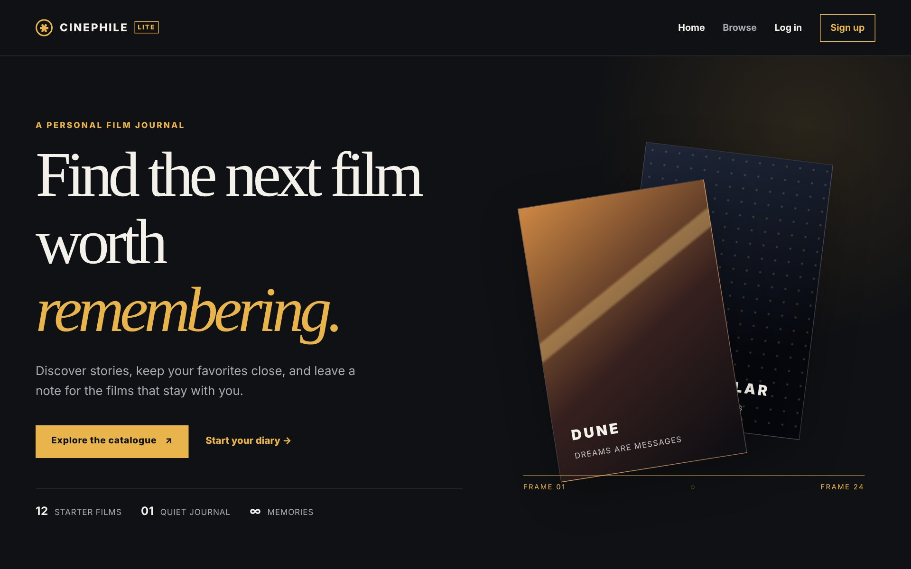
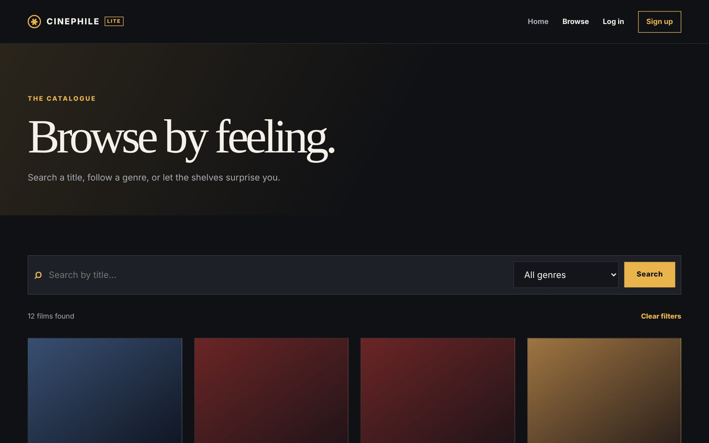
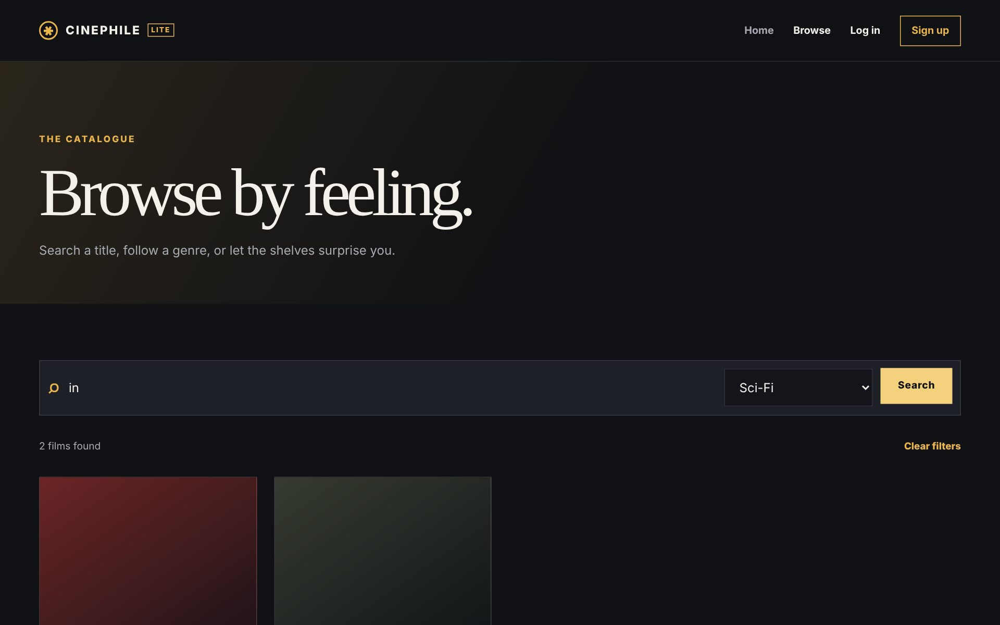
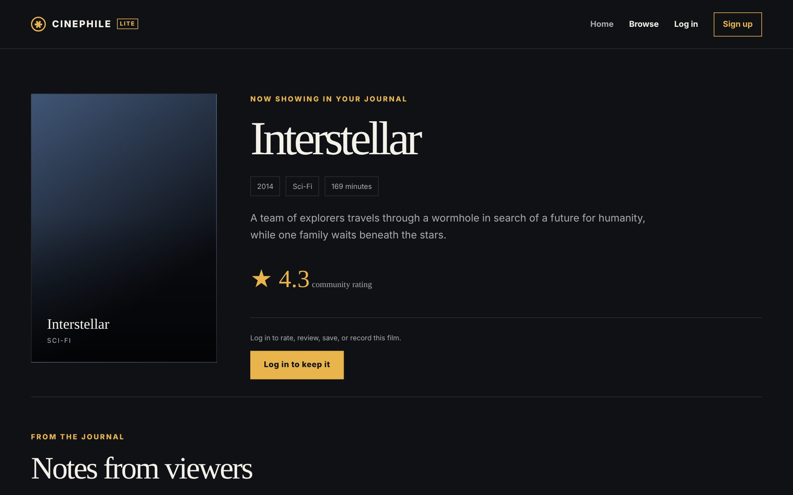
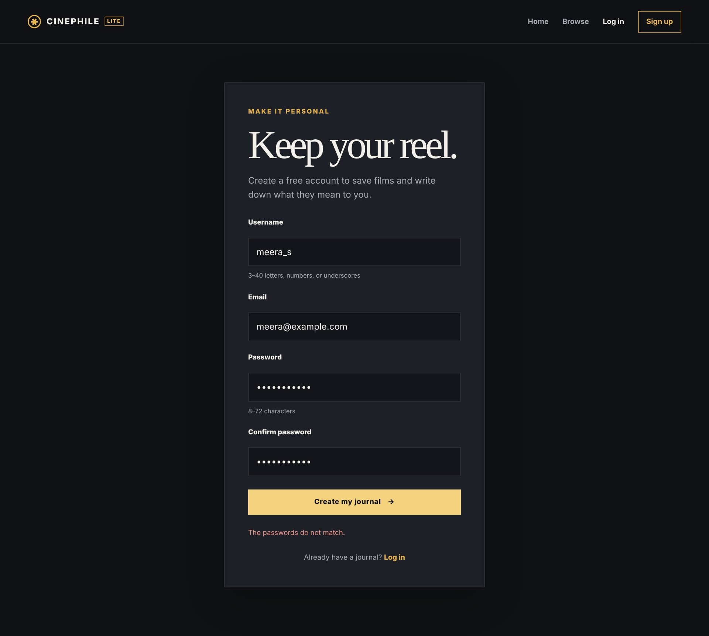
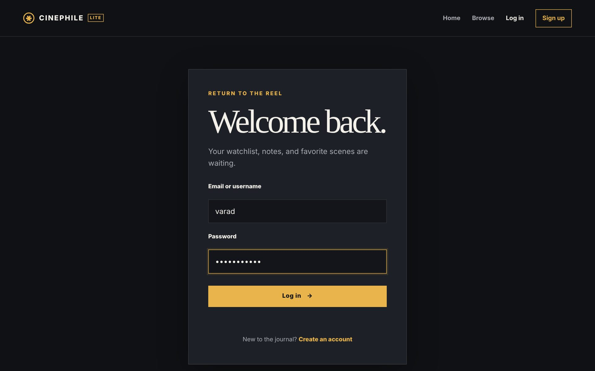
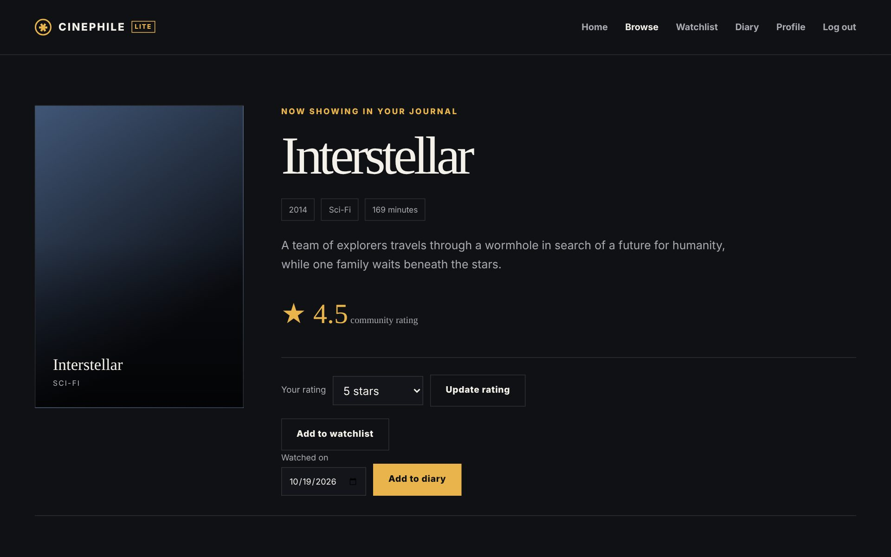
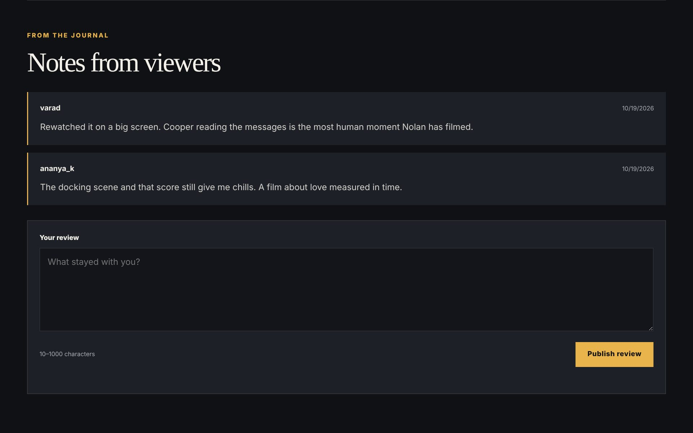
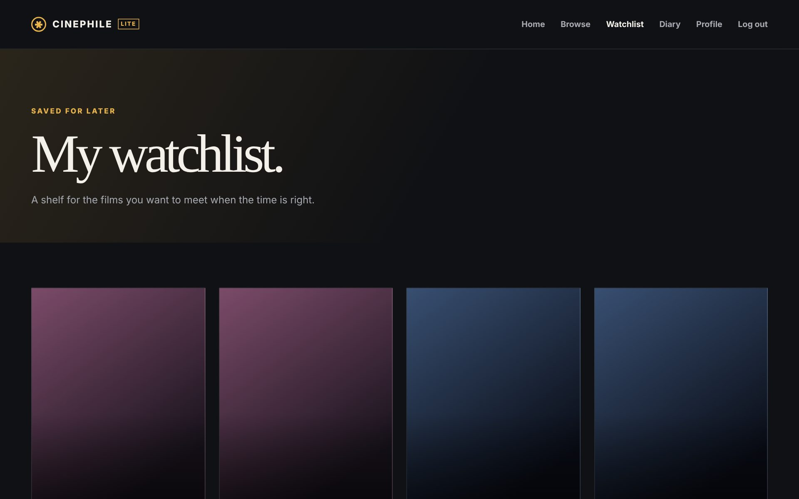
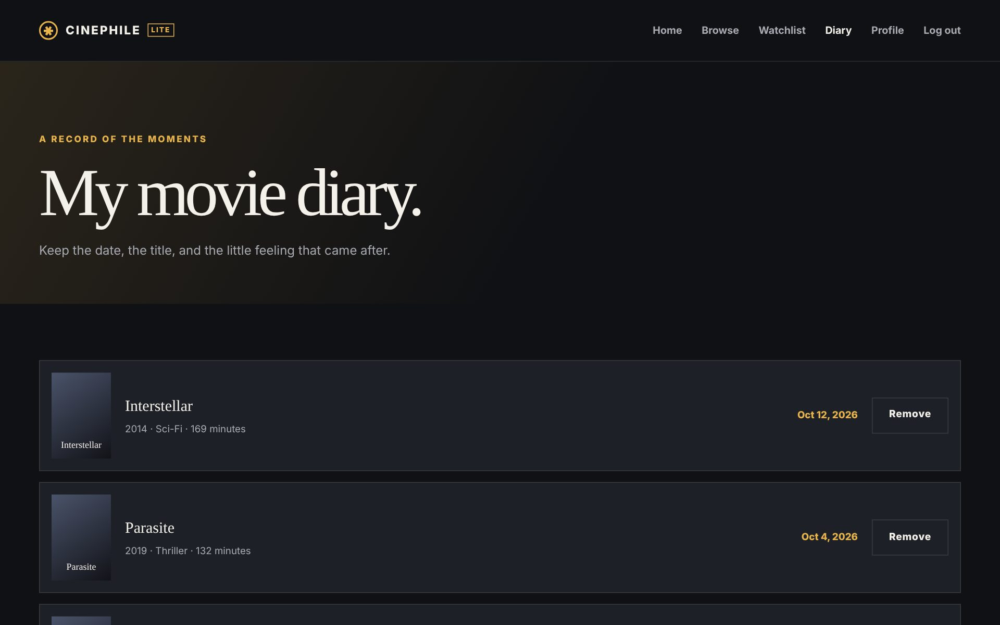
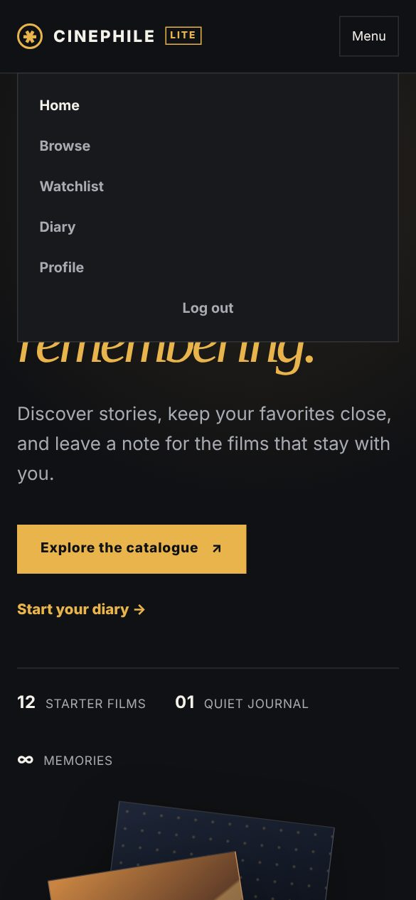
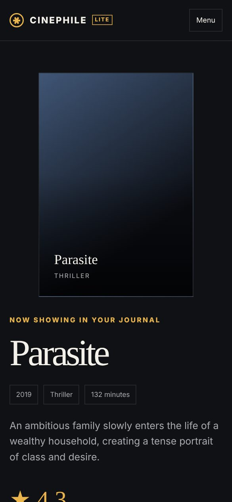
Cinephile Lite shows that a complete, multi-user web application can be built with only the core web platform — HTML, CSS and plain JavaScript in the browser, PHP and MySQL on the server — while staying small enough to be read and explained in full. The project met its objectives: visitors can discover and search the catalogue; registered users can rate, review, save and log films; the profile reflects their activity in real time; and the interface works on both desktop and phone.
From the course point of view, the project made the relationship between the layers concrete. A single click passes through a form, a JavaScript event handler, a Fetch request, a PHP session check, server-side validation, a prepared statement and a relational table with keys and constraints, and comes back as JSON that updates the page. The hardening work — CSRF protection, session fixation defences, the bcrypt length limit, and a global JSON error handler, all verified by an automated end-to-end test — also showed that security and correctness need as much attention as visible features.
password_hash, sessions,” php.net/manual. Accessed Oct. 2026.